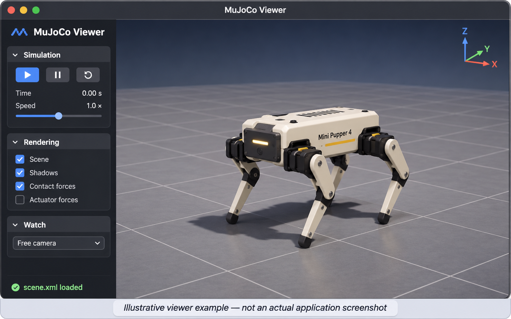
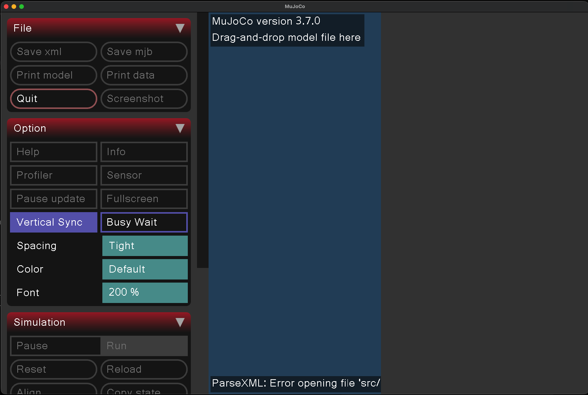
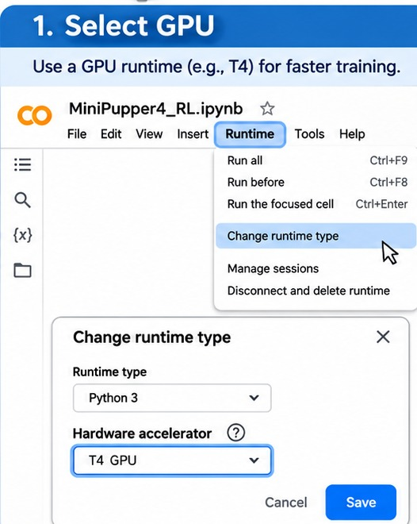
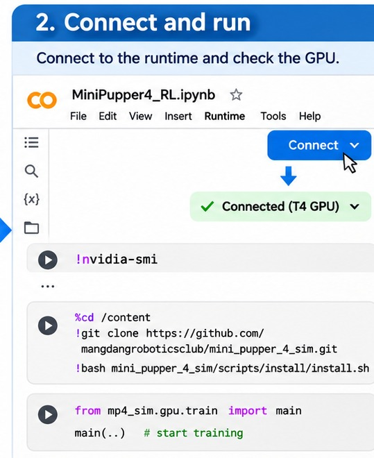
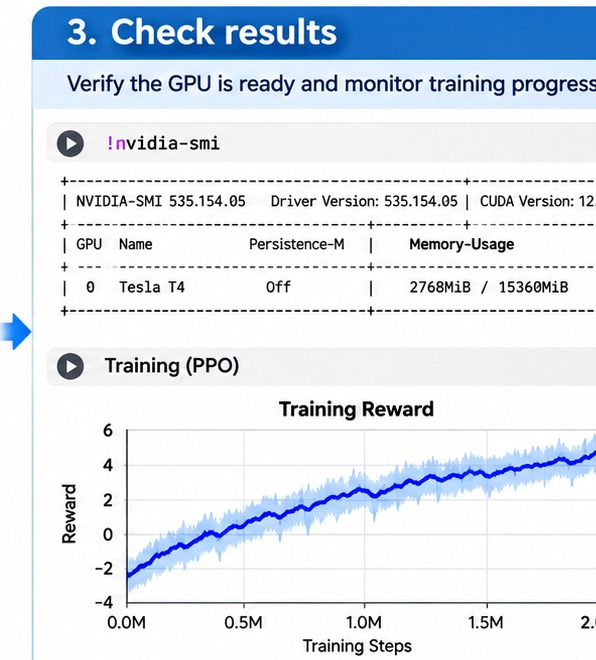

Start here: what you are trying to do
Goal: use the mini_pupper_4_sim repository to understand reinforcement learning by running the simulator, reading the observation/action interface, and training or verifying a walking policy.
Visual check: Lesson 4 now shows the successful viewer (illustration) next to the MuJoCo XML-loading error you encountered. Use the links in the left-hand menu to jump between lessons. Lesson 6 now includes three illustrated Colab interface steps.
- MuJoCo is the physics engine.
- The repository wraps MuJoCo as an RL environment.
- A policy network reads a vector of numbers and outputs 12 motor commands.
- PPO improves that network by trial and error.
Recommended learning order
- Make the MuJoCo scene open correctly.
- Read the 45-value observation format.
- Run a pretrained policy or verify one.
- Train a small experiment on a GPU machine or Colab if compatible.
- Tune rewards or commands and compare results.
| Task | Best machine | Why |
|---|---|---|
| Open scene, inspect robot, read code | MacBook | CPU mode is enough |
| Verify ONNX policy | MacBook or Colab | Low compute requirement |
| Full PPO training | NVIDIA GPU / compatible Colab GPU | The repo's main training path is GPU-based |
Repository setup
mkdir -p ~/research/03_Robotics
cd ~/research/03_Robotics
git clone https://github.com/mangdangroboticsclub/mini_pupper_4_sim.git
cd mini_pupper_4_sim
bash scripts/install/install.sh --mode cpu.venv/bin/python -c "import mujoco, mp4_sim; print('MuJoCo:', mujoco.__version__)"
find src/mp4_sim/robot/assets -name scene.xmlReinforcement learning in one figure
Goal: understand RL with one loop, not theory overload.
- Read numbers from the environment:
obs = env.get_state() - Call the neural network:
action = policy(obs) - Step MuJoCo:
next_obs, reward = env.step(action) - Store transitions.
- Run PPO to improve the policy weights.
The smallest pseudo-code
policy = NeuralNetwork()
optimizer = PPO(policy)
env = MiniPupperEnv()
for iteration in range(N):
trajectories = []
obs = env.reset()
for step in range(H):
action = policy(obs)
next_obs, reward, done, info = env.step(action)
trajectories.append((obs, action, reward, next_obs, done))
obs = env.reset() if done else next_obs
optimizer.update(trajectories)What PPO is doing
You do not directly program the gait. PPO adjusts the network weights so that actions that produced better rewards become more likely next time.
What the policy sees and outputs
Goal: map repository data structures to neural-network inputs and outputs.
| Part | Count | Meaning |
|---|---|---|
| body angular velocity | 3 | How the trunk is rotating |
| projected gravity | 3 | Body orientation cue |
| command | 3 | Desired forward / lateral / yaw motion |
| joint positions | 12 | Current leg angles |
| joint velocities | 12 | How fast each joint moves |
| previous actions | 12 | Stabilizes policy behavior |
The action is a 12-value vector. Think of it as a compact command for the 12 servos. The repo then scales and clips it before sending it to the robot.
raw_action = policy(obs) # 12 numbers, often near [-1, 1]
action = clip(raw_action, -1, 1)
target_offset = action_scale * action
motor_target = stand_pose + target_offset
motor_target = clip_to_joint_limits(motor_target)Open the MuJoCo scene and inspect the robot
Goal: make the robot appear in MuJoCo and inspect its actuators from Python.
Open the scene
cd ~/research/03_Robotics/mini_pupper_4_sim
SCENE="$(pwd)/src/mp4_sim/robot/assets/sku_1/scene.xml"
ls -l "$SCENE"
.venv/bin/python -m mujoco.viewer --mjcf="$SCENE"
ParseXML: Error opening file ..., the path is wrong or you are not in the repo root. Using the absolute path above usually fixes it.
ls -l "$SCENE" and use an absolute path.Inspect actuators from Python
import mujoco
from pathlib import Path
scene = Path('src/mp4_sim/robot/assets/sku_1/scene.xml').resolve()
model = mujoco.MjModel.from_xml_path(str(scene))
data = mujoco.MjData(model)
print('joints =', model.njnt)
print('actuators =', model.nu)
for i in range(model.nu):
name = mujoco.mj_id2name(model, mujoco.mjtObj.mjOBJ_ACTUATOR, i)
print(i, name).venv/bin/python inspect_robot.pyRead the repository like an RL engineer
Goal: know where to look instead of reading everything.
| What you want | Where to look |
|---|---|
| Robot models / scene XML | src/mp4_sim/robot/assets/... |
| Observation and reward definitions | src/mp4_sim/gpu/mdp.py |
| Task / terrain logic | src/mp4_sim/gpu/terrain_task.py |
| Training entry point | python -m mp4_sim.gpu.train ... |
| ONNX export / verify | src/mp4_sim/export/... |
sed -n '1,220p' src/mp4_sim/gpu/mdp.pygrep -Rni "reward\|penalty\|stumble\|clearance" src/mp4_sim/gpuWhat to search for
- Where observations are concatenated
- How commands are represented
- Where reward terms are added or subtracted
- Where action scaling and clipping happen
Use Google Colab for training
What Google Colab looks like: these three illustrations show where to click. The exact menus may differ from today's Colab interface.



!nvidia-smi. The illustrative output shows driver 535, which is below the repository's stated 580+ requirement; such a session would not be appropriate for its official GPU training environment. The reward chart is example artwork, not a real training result.Download the Colab notebook (.ipynb) — in Google Colab choose File → Upload notebook and select this file.
Goal: get a compatible GPU runtime and run a controlled training experiment.
!nvidia-smi
import sys, platform
print(sys.version)
print(platform.platform())!git clone https://github.com/mangdangroboticsclub/mini_pupper_4_sim.git
%cd mini_pupper_4_sim!bash scripts/install/install.sh --mode gpuTraining mindset
- First verify the environment builds.
- Run a short experiment, not a long one.
- Save logs and checkpoints.
- Only then scale up.
CLI reminder: check python -m mp4_sim.gpu.train --help in your installed repository before running an example command; task and option names may change.
python -m mp4_sim.gpu.train --task flat_omni --max_iterations 100 --experiment_name debug_runTune rewards and commands
Goal: understand what to modify when the learned behavior is bad.
| Symptom | What to inspect |
|---|---|
| Robot moves but falls often | Stability penalties, action scale, episode termination |
| Robot stands but barely walks | Forward reward too weak, command sampling too small |
| Feet hit obstacles | Clearance rewards / terrain curriculum |
| Actions are jerky | Action penalty, previous action term, policy frequency |
As a programmer, think of reward tuning as changing the objective function for optimization.
grep -Rni "command\|clearance\|stumble\|action_scale\|termination" src/mp4_sim/gpu- Change one thing.
- Run a short experiment.
- Compare with baseline.
- Keep notes.
Verify, export, and deploy
Goal: close the loop from training result to something you can test or transfer.
Verify existing policies
.venv/bin/python -m mp4_sim.export.verify policies/flat_omni
.venv/bin/python -m mp4_sim.export.verify policies/rough_terrain
.venv/bin/python -m mp4_sim.export.verify policies/stairsDeployment mindset
- Keep the stand pose and joint limits safe.
- Test slowly with supervision.
- Compare simulation actions and real servo behavior.
- Expect sim-to-real differences.
What to do next
- Open the scene and inspect the 12 actuators.
- Read
mdp.pyand list the observation terms yourself. - Run a short training job in Colab or on a GPU machine.
- Change one reward term and observe the difference.